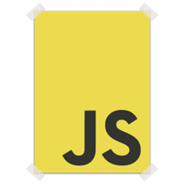
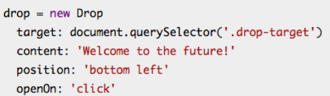
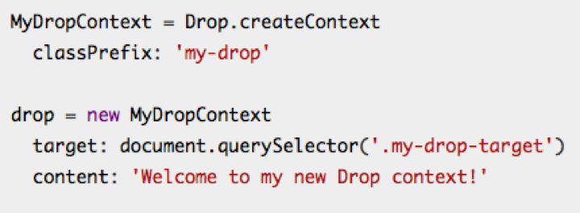
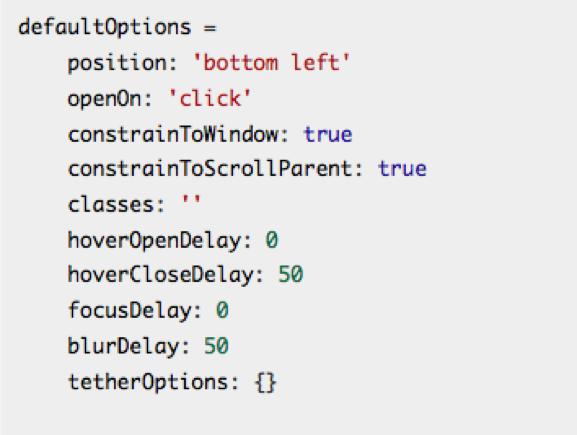

The fast and capable dropdown library
Watch The Youtube Presentation Videoby: Elson Correia
DropJs is a JavaScript and CSS library for creating dropdowns and other popups attached to elements on the page. Drop uses Tether.js to efficiently position its elements.
Tether.js is a client-side library to make absolutely positioned elements attach to elements in the page efficiently.
Supported by IE9+ and all other browsers
DropJs is TetherJs dependent
Create a Drop instance :
OR, create Drops from a custom ‘context’:
<div class="drop-target">
hover over me
<div>
<<< Create your target element
var myDrop = new Drop({
target: document.querySelector('.drop-target'),
content: 'This is a DropJs Sample',
classes: 'drop-popup',
position: 'bottom left',
openOn: 'hover',
});
<<< Create your drop instance
Default Options:
<div class="drop-target2">
click me! I'll say Hello and turn Red
<div class="drop-content">
HELLO THERE!
<div>
<div>
<<< Create your target element
var myDrop2 = new Drop({
target: document.querySelector('.drop-target2'),
content: document.querySelector('.drop-content'),
classes: 'drop-theme-arrows-bounce-dark',
position: 'bottom left',
openOn: 'click',
beforeClose: function(){
document.querySelector('.drop-target2').style.backgroundColor = "#800";}
});
< Create Drop Instance
var myDrop = new Drop({
target: document.querySelector('.drop-target'),
content: 'This is a DropJs Sample',
classes: 'drop-popup',
position: 'bottom left',
openOn: 'hover',
});
myDrop.open();
myDrop.off('click', function(){ '//Do Something} );
by: Elson Correia 2016